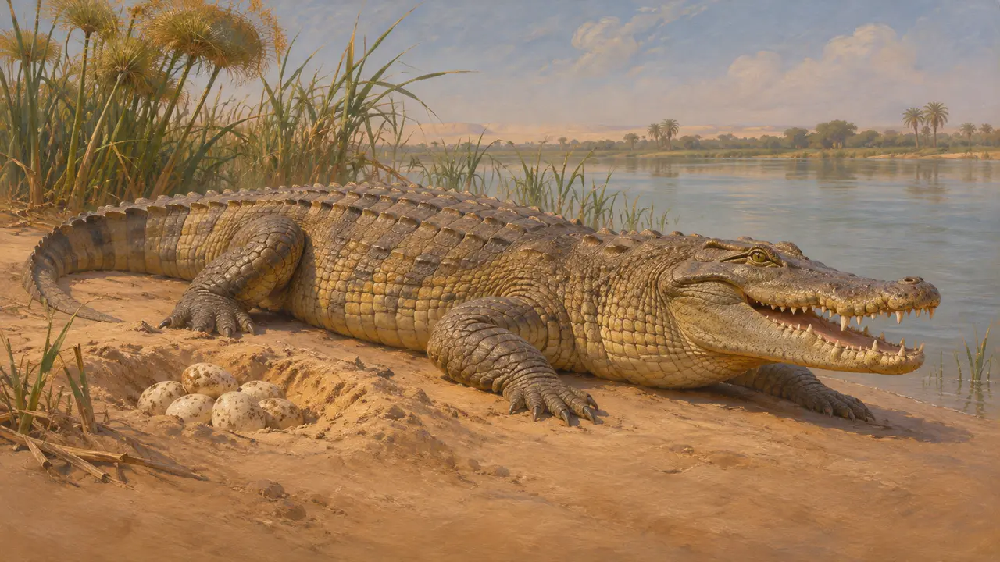
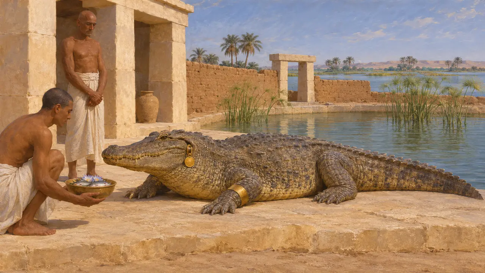
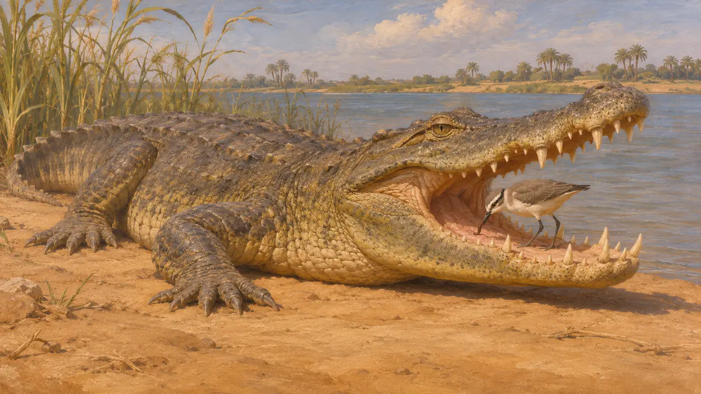
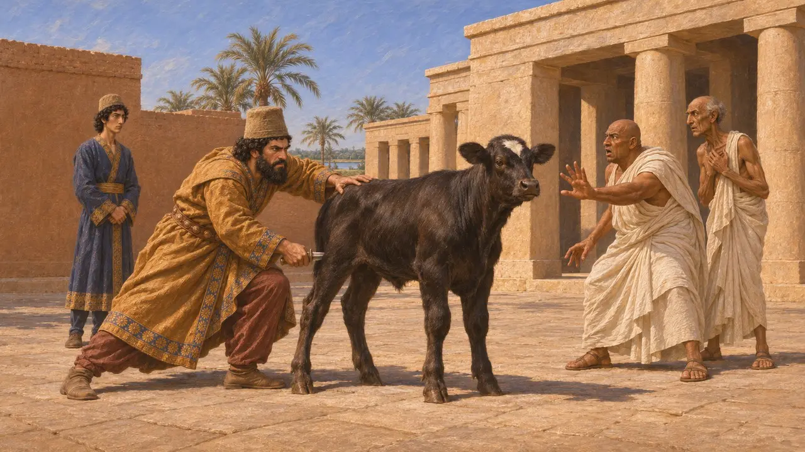
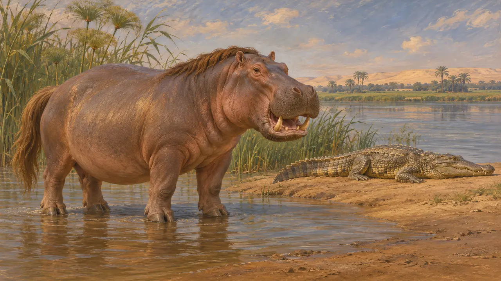

Энциклопедия › Животный мир и погода

Нильский крокодил
Речной хищник Египта, в некоторых местах священный, каким его увидел Геродот, около 450 года до н. э.
В игре: Уровень 2: Копьеносец
Нильский крокодил обитал в египетской реке: в одних местах его боялись, в других почитали. Самое полное греческое описание этого животного оставил Геродот, вероятно, после собственной поездки в Египет, последовавшей за персидским завоеванием 525 года до н. э. Оно показывает, как египетская жизнь выглядела для чужеземцев в мире, которым правили Камбис и Дарий.
В игре: Игра рисует крокодила, лежащего на берегу реки, только на уровне «Мемфис». Это элемент пейзажа: ни одно правило его не учитывает.

Геродот о животном
Античное свидетельствоГеродот описывает крокодила в своей египетской книге. Он говорит, что днём крокодил живёт на суше, а ночью в воде, откладывает яйца на берегу и не имеет языка. Про яйца на суше он прав. Утверждение, что языка нет, ошибочно: язык прикреплён ко дну пасти и его трудно разглядеть.
Herodotus 2.68

В одних местах священное, в других — добыча
Античное свидетельствоГеродот сообщает, что одни египтяне считали крокодила священным, а другие обращались с ним как с врагом. Возле Фив и озера Мерида, по его словам, держали ручного крокодила, украшали его и после смерти бальзамировали. В Элефантине, говорит он, крокодилов ели и священными не считали.
Herodotus 2.69

Птица, которая чистит крокодила
СпорныйГеродот говорит, что маленькая птица залетает в раскрытую пасть крокодила и выбирает из неё пиявок, а крокодил не причиняет ей вреда. Бывает ли такое сотрудничество на самом деле, остаётся неясным, а рассказ опирается лишь на сообщение Геродота. Его лучше читать как то, что ему поведали в Египте.
Herodotus 2.68

Персидская власть и египетские культы животных
Античное свидетельствоГеродот рассказывает, как Камбис ударил кинжалом телёнка Аписа и надругался над богами египтян. Историки сомневаются в этом образе Камбиса, а египетские источники того времени говорят о том, что персидская власть оставила культы животных нетронутыми. Рассказ касается быка Аписа, а не крокодила, и показывает, как греки и египтяне формировали память о завоевании.
Herodotus 3.27-29

Бегемот рядом
Античное свидетельствоГеродот описывает гиппопотама в следующей главе. Он наделяет его раздвоенными копытами, конской гривой и хвостом и клыками. Копыта и грива указаны неверно, а клыки настоящие. Обоих животных он считает приметами Египта, и это показывает, что именно казалось греческим гостям там странным.
Herodotus 2.71
Источники
- Herodotus 2.68-71
- Herodotus 3.27-29
- P. Briant, From Cyrus to Alexander, 2002